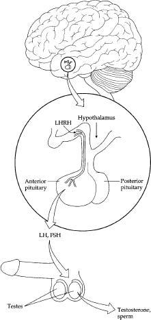
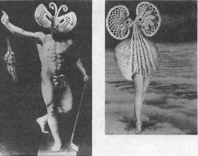
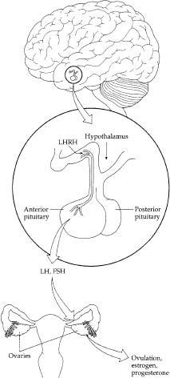
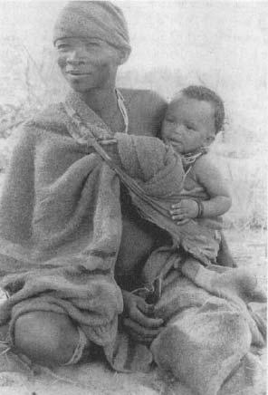

Kidneys and pancreas and heart are important, but what we really want to know is why, when we are being stressed, our menstrual cycles become irregular, erections are more difficult to achieve, and we lose our interest in sex. As it turns out, there are an astonishing number of ways in which reproductive mechanisms may go awry when we are upset.
Kidneys and pancreas and heart are important, but what we really want to know is why, when we are being stressed, our menstrual cycles become irregular, erections are more difficult to achieve, and we lose our interest in sex. As it turns out, there are an astonishing number of ways in which reproductive mechanisms may go awry when we are upset.
Males: Testosterone
and Loss of Erections
It makes sense to start simple, so let’s initially consider the easier reproductive system, that of males. In the male, the brain releases the hormone LHRH (luteinizing hormone releasing hormone), which stimulates the pituitary to release LH (luteinizing hormone) and FSH (follicle-stimulating hormone).* LH, in turn, stimulates the testes to release testosterone. Since men don’t have follicles to be stimulated by follicle-stimulating hormone, FSH instead stimulates sperm production. This is the reproductive system of your basic off-the-rack male.

A simplified version of male reproductive endocrinology. The hypothalamus releases LHRH into the private circulatory system that it shares with the anterior pituitary. LHRH triggers the release by the pituitary of LH and FSH, which work at the testes to cause testosterone secretion and sperm production.
With the onset of a stressor, the whole system is inhibited. LHRH concentrations decline, followed shortly thereafter by declines in LH and FSH, and then the testes close for lunch. The result is a decline in circulating testosterone levels. The most vivid demonstrations of this occur during physical stress. If a male goes through surgery, within seconds of the first slice of a scalpel through his skin, the reproductive axis begins to shut down. Injury, illness, starvation, surgery—all of these drive down testosterone levels. Anthropologists have even shown that in human societies in which there is constant energetic stress (for example, those of rural Nepalese villagers), there are significantly lower testosterone levels than among sedentary Bostonian controls.
But subtle psychological stressors are just as disruptive. Lower the dominance rank of a social primate and down go his testosterone levels. Put a person or a monkey through a stressful learning task and the same occurs. In a celebrated study several decades ago, U.S. Officer Candidate School trainees who underwent an enormous amount of physical and psychological stress were subjected to the further indignity of having to pee into Dixie cups so that military psychiatrists could measure their hormone levels. Lo and behold, testosterone levels were down; maybe not to the levels found in cherubic babies, but still it’s worth keeping in mind the next time you see some leatherneck at a bar bragging about his circulating androgen concentrations.
Why do testosterone concentrations plunge with the onset of a stressor? For a variety of reasons. The first occurs at the brain. With the onset of stress, two important classes of hormones, the endorphins and enkephalins (mostly the former), act to block the release of LHRH from the hypothalamus. As will be discussed in chapter 9, endorphins play a role in blocking pain perception and are secreted in response to exercise (helping to account for the famed “runner’s high” or “endorphin high” that hits many hardy joggers around the 30-minute mark). If males secrete endorphins when they are experiencing runner’s high, and these compounds inhibit testosterone release, will exercise suppress male reproduction? Sometimes. Males who do extreme amounts of exercise, such as professional soccer players and runners who cover more than 40 or 50 miles a week, have less LHRH, LH, and testosterone in their circulation, smaller testes, less functional sperm. They also have higher levels of glucocorticoids in their bloodstreams, even in the absence of stress. (A similar decline in reproductive function is found in men who are addicted to opiate drugs.) To jump ahead to the female section, reproductive dysfunction is also seen in women athletes, and this is at least partially due to endorphin release as well. Up to half of competitive runners have menstrual irregularities, and highly athletic girls reach puberty later than usual. For example, in one study of fourteen-year-olds, approximately 95 percent of control subjects had started menstruating, whereas only 20 percent of gymnasts and 40 percent of runners had.
This brings up a broader issue important to our era of lookin’ good. Obviously, if you don’t exercise at all, it is not good for you. Exercise improves your health. And a lot of exercise improves your health a lot. But that doesn’t mean that insanely large amounts of exercise are insanely good for your body. At some point, too much begins to damage various physiological systems. Everything in physiology follows the rule that too much can be as bad as too little. There are optimal points of allostatic balance. For example, while a moderate amount of exercise generally increases bone mass, thirty-year-old athletes who run 40 to 50 miles a week can wind up with decalcified bones, decreased bone mass, increased risk of stress fractures and scoliosis (sideways curvature of the spine)—their skeletons look like those of seventy-year-olds.
To put exercise in perspective, imagine this: sit with a group of hunter-gatherers from the African grasslands and explain to them that in our world we have so much food and so much free time that some of us run 26 miles in a day, simply for the sheer pleasure of it. They are likely to say, “Are you crazy? That’s stressful.” Throughout hominid history, if you’re running 26 miles in a day, you’re either very intent on eating someone or someone’s very intent on eating you.
Thus, we have a first step. With the onset of stress, LHRH secretion declines. In addition, prolactin, another pituitary hormone that is released during major stressors, decreases the sensitivity of the pituitary to LHRH. A double whammy—less of the hormone dribbling out of the brain, and the pituitary no longer responding as effectively to it. Finally, glucocorticoids block the response of the testes to LH, just in case any of that hormone manages to reach them during the stressor (and serious athletes tend to have pretty dramatic elevations of glucocorticoids in their circulation, no doubt adding to the reproductive problems just discussed).
A decline in testosterone secretion is only half the story of what goes wrong with male reproduction during stress. The other half concerns the nervous system and erections. Getting an erection to work properly is so incredibly complicated physiologically that if men ever actually had to understand it, none of us would be here. Fortunately, it runs automatically. In order for a male primate to have an erection, he has to divert a considerable amount of blood flow to his penis, engorging it.* This is accomplished by activating his parasympathetic nervous system. In other words, the guy has to be calm, vegetative, relaxed.

Overexercise can have a variety of deleterious effects. (Left) Max Ernst, Health Through Sport, photographic enlargement of a photomontage mounted on wood, 1920; (right) Above the Clouds Midnight Passes, collage with fragments of photographs and pencil, 1920.
What happens next, if you are male? You are having a terrific time with someone. Maybe you are breathing faster, your heart rate has increased. Gradually, parts of your body are taking on a sympathetic tone—remember the four F’s of sympathetic function introduced in chapter 2. After awhile, most of your body is screaming sympathetic while, heroically, you are trying to hold on to parasympathetic tone in that one lone outpost as long as possible. Finally, when you can’t take it anymore, the parasympathetic shuts off at the penis, the sympathetic comes roaring on, and you ejaculate. (Incredibly complicated choreography between these two systems; don’t try this unsupervised.) This new understanding generates tricks that sexual therapists advise—if you are close to ejaculating and don’t want to yet, take a deep breath. Expanding the chest muscles briefly triggers a parasympathetic volley that defers the shift from parasympathetic to sympathetic.
What, then, changes during stress? One is that sufficient prior stress will damage and clog up your blood vessels—severe vascular disease can seriously impede blood flow. But what if you’re stressed in that immediate situation? Well, obviously, if you’re nervous or anxious, you’re not calm or vegetative. First, it becomes difficult to establish parasympathetic activity if you are nervous or anxious. You have trouble having an erection. Impotency. And if you already have the erection, you get in trouble as well. You’re rolling along, parasympathetic to your penis, having a wonderful time. Suddenly, you find yourself worrying about the strength of the dollar versus the euro and—shazaam—you switch from parasympathetic to sympathetic far faster than you wanted. Premature ejaculation.
It is extremely common for problems with impotency and premature ejaculation to arise during stressful times. Furthermore, this can be compounded by the fact that erectile dysfunction is a major stressor on its own, getting men into this vicious performance anxiety cycle of fearing fear itself. A number of studies have shown that more than half the visits to doctors by males complaining of reproductive dysfunction turn out to be due to “psychogenic” impotency rather than organic impotency (there’s no disease there, just too much stress). How do you tell if it is organic or psychogenic impotency? This is actually diagnosed with surprising ease, because of a quirky thing about human males. As soon as they go to sleep and enter REM (rapid eye movement) dream sleep, they get erections. I’ve consulted with Earth’s penis experts, and no one is sure why this should occur, but that’s how it works.* So a man comes in complaining that he hasn’t been able to have an erection in six months. Is he just under stress? Does he have some neurological disease? Take a handy little penile cuff with an electronic pressure transducer attached to it. Have him put it on just before he goes to sleep. By the next morning you may have your answer—if this guy gets an erection when he goes into REM sleep, his problem is likely to be psychogenic.*
Thus, stress will knock out erections quite readily. In general, the problems with erections are more disruptive than problems with testosterone secretion. Testosterone and sperm production have to shut down almost entirely to affect performance. A little testosterone and a couple of sperm wandering around and most males can muddle through. But no erection, and forget about it.*
The erectile component is exquisitely sensitive to stress in an incredible array of species. Nonetheless, there are some circumstances where stress does not suppress the reproductive system in a male. Suppose you’re some big bull moose and it’s mating season. You’re spending all your time strutting your stuff and growing your antlers and snorting and having head-butting territorial disputes with the next guy and forgetting to eat right and not getting enough sleep and getting injured and worrying about the competition for some female moose’s favors.* Stressful. Wouldn’t it be pretty maladaptive if the male-male competitive behaviors needed to get the opportunity to mate were so stressful that when the opportunity came, you were sexually dysfunctional? Not a good Darwinian move.
Or suppose that in your species, sex is this wildly metabolically demanding activity, involving hours, even days of copulation at the cost of resting or feeding (lions fall in this category, for example). High energetic demands plus little eating or sleeping equals stress. It would be disadvantageous if the stress of mating caused erectile dysfunction.
It turns out that in a lot of species, stressors associated with mating season competition or with mating itself not only don’t suppress the reproductive system, but can stimulate it a bit. In some species where this applies, the seeming stressor doesn’t cause secretion of stress hormones; in other cases, the stress hormones are secreted but the reproductive system becomes insensitive to them.
And then there is one species which, regardless of whether it is mating season or not, breaks all the rules concerning the effects of stress on erectile function. It is time we had a little talk about hyenas.
Our Friend, the Hyena
The spotted hyena is a vastly unappreciated, misrepresented beast. I know this because over the years, in my work in East Africa, I have shared my campsite with the hyena biologist Laurence Frank of the University of California at Berkeley. For lack of distracting television, radio, or telephone, he has devoted his time with me to singing the hyena’s praises. They are wondrous animals who have gotten a bad rap from the press.
We all know the scenario. It’s dawn on the savanna. Marlin Perkins of Mutual of Omaha’s Wild Kingdom is there filming lions eating something dead. We are delighted, craning to get a good view of the blood and guts. Suddenly, on the edge of our field of vision, we spot them—skulky, filthy, untrustworthy hyenas looking to dart in and steal some of the food. Scavengers! We are invited to heap our contempt on them (a surprising bias, given how few of the carnivorous among us ever wrestle down our meals with our canines). It wasn’t until the Pentagon purchased a new line of infrared night-viewing scopes and decided to unload its old ones on various zoologists that, suddenly, researchers could watch hyenas at night (important, given that hyenas mostly sleep during the day). Turns out that they are fabulous hunters. And you know what happens? Lions, who are not particularly effective hunters, because they are big and slow and conspicuous, spend most of their time keying in on hyenas and ripping off their kills. No wonder when it’s dawn on the savanna the hyenas on the periphery are looking cranky, with circles under their eyes. They stayed up all night hunting that thing, and who’s having breakfast now?
Having established a thread of sympathy for these beasts, let me explain what is really strange about them. Among hyenas, females are socially dominant, which is fairly rare among mammals. They are more muscular and more aggressive, and have more of a male sex hormone (a close relative of testosterone called androstenedione) in their bloodstreams than males. It’s also almost impossible to tell the sex of a hyena by looking at its external genitals.
More than two thousand years ago, Aristotle, for reasons obscure to even the most learned, dissected some dead hyenas, discussing them in his treatise Historia Animalium, VI, XXX. The conclusion among hyena savants at the time was that these animals were hermaphrodites—animals that possess all the machinery of both sexes. Hyenas are actually what gynecologists would call pseudohermaphrodites (they just look that way). The female has a fake scrotal sac made of compacted fat cells; she doesn’t really have a penis but, instead, an enlarged clitoris that can become erect. The same clitoris, I might add, with which she has sex and through which she gives birth. It’s pretty wild. Laurence Frank, who is one of Earth’s experts on hyena genitals, will dart some animal and haul it, anesthetized, into camp. Excitement; we go to check it out, and maybe twenty minutes into examining it, he kind of thinks he knows what sex this particular one is. (Yes, the hyenas themselves know exactly who is which sex, most probably by smell.)
Behold, the female hyena.
Perhaps the most interesting thing about hyenas is that there is a fairly plausible theory as to why they evolved this way, a theory complicated enough for me mercifully to relegate it to the endnotes. For our purposes here, what is important is that hyenas have evolved not only genitals that look unique, but also unique ways to use these organs for social communication. This is where stress comes into play.
Among many social mammals, males have erections during competitive situations as a sign of dominance. If you are having a dominance display with another male, you get an erection and wave it around in his face to show what a tough guy you are. Social primates do this all the time. However, among hyenas, an erection is a sign of social subordinance. When a male is menaced by a terrifying female, he gets an erection—“Look, I’m just some poor no-account male; don’t hit me, I was just leaving.” Low-ranking females do the same thing; if a low-ranking female is about to get trounced by a high-ranking one, she gets a conspicuous clitoral erection—“Look, I’m just like one of those males; don’t attack me; you know you’re dominant over me, why bother?” If you’re a hyena, you get an erection when you are stressed. Among male hyenas, the autonomic wiring has got to be completely reversed in order to account for the fact that stress causes erections. This hasn’t yet been demonstrated, but perhaps Berkeley scientists working on this, squandering tax dollars that could otherwise be going to Halliburton and Bechtel, will do it.
Thus the hyena stands as the exception to the rule about erectile functions being adversely affected by stress, a broader demonstration of the importance of looking at a zoological oddity as a means of better seeing the context of our own normative physiology, and a friendly word of warning before you date a hyena.
Females: Lengthened Cycles
and Amenorrhea
We now turn to female reproduction. Its basic outline is similar to that of the male. LHRH is released by the brain, which releases LH and FSH from the pituitary. The latter stimulates the ovaries to release eggs; the former stimulates ovaries to synthesize estrogen. During the first half of the menstrual cycle, the “follicular” stage, levels of LHRH, LH, FSH, and estrogen build up, heading toward the climax of ovulation. This ushers in the second half of the cycle, the “luteal” phase. Progesterone, made in the corpus luteum of the ovary, now becomes the dominant hormone on the scene, stimulating the uterine walls to mature so that an egg, if fertilized just after ovulation, can implant there and develop into an embryo. Because the release of hormones has the fancy quality of fluctuating rhythmically over the menstrual cycle, the part of the hypothalamus that regulates the release of these hormones is generally more structurally complicated in females than in males.

A simplified version of female reproductive endocrinology. The hypothalamus releases LHRH into the private circulatory system that it shares with the anterior pituitary. LHRH triggers the release by the pituitary of LH and FSH, which in turn bring about ovulation and hormone release from the ovaries.
The first way in which stress disrupts female reproduction concerns a surprising facet of the system. There is a small amount of male sex hormone in the bloodstream of females, even non-hyena females. In human beings, this doesn’t come from the ovaries (as in the hyenas), but from the adrenals. The amount of these “adrenal androgens” is only about 5 percent of that in males, but enough to cause trouble.* An enzyme in the fat cells of females usually eliminates these androgens by converting them to estrogens. Problem solved. But what if you are starving because the crops failed this year? Body weight drops, fat stores are depleted, and suddenly there isn’t enough fat around to convert all the androgen to estrogen. Less estrogen, therefore, is produced. More important, androgen concentrations build up, which inhibits numerous steps in the reproductive system (it should be noted that this is but one of the mechanisms by which starvation inhibits reproduction).
Reproduction is similarly inhibited if you starve voluntarily. One of the hallmarks of anorexia nervosa is disruption of reproduction in the (typically) young women who are starving themselves. There’s more to the reproduction cessation than just the weight loss, since cycling doesn’t necessarily resume in women when they regain the weight unless the initial psychological stressors have been sorted out. But the weight loss still plays a critical, initiating role. And loss of body fat leading to androgen buildup is one of the mechanisms by which reproduction is impaired in females who are extremely active physically. As noted above, this has been best documented in young girls who are serious dancers or runners, in whom puberty can be delayed for years, and in women who exercise enormous amounts, in whom cycles can become irregular or cease entirely. Overall, this is a logical mechanism. In the human, an average pregnancy costs approximately 50,000 calories, and nursing costs about a thousand calories a day; neither is something that should be gone into without a reasonable amount of fat tucked away.
Stress also can inhibit reproduction in ways other than shrinkage of fat cells. Many of the same mechanisms apply as in the male. Endorphins and enkephalins will inhibit LHRH release (as discussed, this occurs in female athletes as readily as in males); prolactin and glucocorticoids will block pituitary sensitivity to LHRH; and glucocorticoids will also affect the ovaries, making them less responsive to LH. The net result is lowered secretion of LH, FSH, and estrogen, making the likelihood of ovulating decrease. As a result, the follicular stage is extended, making the entire cycle longer and less regular. At an extreme, the entire ovulatory machinery is not merely delayed, but shut down, a condition termed anovulatory amenorrhea.
Stress can also cause other reproductive problems. Progesterone levels are often inhibited, which disrupts maturation of the uterine walls. The release of prolactin during stress adds to this effect, interfering with the activity of progesterone. Thus, even if there is still enough hormonal action during the follicular period to cause ovulation, and the egg has become fertilized, it is now much less likely to implant normally.
The loss of estrogen with sustained stress has some consequences beyond the reproductive realm. For example, amid the controversies discussed in chapter 3 about whether estrogen protects against cardiovascular disease, it is quite clear that it protects against osteoporosis, and stress-induced declines in estrogen levels have bad effects on bone strength.
Of all the hormones that inhibit the reproductive system during stress, prolactin is probably the most interesting. It is extremely powerful and versatile; if you don’t want to ovulate, this is the hormone to have lots of in your bloodstream. It not only plays a major role in the suppression of reproduction during stress and exercise, but it also is the main reason that breast feeding is such an effective form of contraception.
Oh, you are shaking your head smugly at the ignorance of this author with that Y chromosome; that’s an old wives’ tale; nursing isn’t an effective contraceptive. On the contrary, nursing works fabulously. It probably prevents more pregnancies than any other type of contraception. All you have to do is do it right.
Breast feeding causes prolactin secretion. There is a reflex loop that goes straight from the nipples to the hypothalamus. If there is nipple stimulation for any reason (in males as well as females), the hypothalamus signals the pituitary to secrete prolactin. And as we now know, prolactin in sufficient quantities causes reproduction to cease.
The problem with nursing as a contraceptive is how it is done in Western societies. During the six months or so that she breast-feeds, the average mother in the West allows perhaps half a dozen periods of nursing a day, each for 30 to 60 minutes. Each time she nurses, prolactin levels go up in the bloodstream within seconds, and at the end of the feeding, prolactin settles back to pre-nursing levels fairly quickly. This most likely produces a scalloping sort of pattern in prolactin release.
This is not how most women on earth nurse. A prime example emerged a few years ago in a study of hunter-gatherer Bushmen in the Kalahari Desert of southern Africa (the folks depicted in the movie The Gods Must Be Crazy) Bushman males and females have plenty of intercourse, and no one uses contraceptives, but the women have a child only about every four years. Initially, this seemed easy to explain. Western scientists looked at this pattern and said, “They’re hunter-gatherers: life for them must be short, nasty, and brutish; they must all be starving.” Malnutrition induces cessation of ovulation.

A Kalahari Bushman mother with her child in a hip sling.
However, when anthropologists looked more closely, they found that the Bushmen were anything but suffering. If you are going to be nonwestemized, choose to be a hunter-gatherer over being a nomadic pastoralist or an agriculturist. The Bushmen hunt and gather only a few hours a day, and spend much of the rest of their time sitting around chewing the fat. Scientists have called them the original affluent society. Out goes the idea that the four-year birth interval is due to malnutrition.
Instead, the lengthy interval is probably due to their nursing pattern. This was discovered by a pair of scientists, Melvin Konner and Carol Worthman.* When a hunter-gatherer woman gives birth, she begins to breast-feed her child for a minute or two approximately every fifteen minutes. Around the clock. For the next three years. (Suddenly this doesn’t seem like such a hot idea after all, does it?) The young child is carried in a sling on the mother’s hip so he can nurse easily and frequently. At night, he sleeps near his mother and will nurse every so often without even waking her (as Konner and Worthman, no doubt with their infrared night-viewing goggles and stopwatches, scribble away on their clipboards at two in the morning). Once the kid can walk, he’ll come running in from play every hour or so to nurse for a minute.
When you breast-feed in this way, the endocrine story is very different. At the first nursing period, prolactin levels rise. And with the frequency and timing of the thousands of subsequent nursings, prolactin stays high for years. Estrogen and progesterone levels are suppressed, and you don’t ovulate.
This pattern has a fascinating implication. Consider the life history of a hunter-gatherer woman. She reaches puberty at about age thirteen or fourteen (a bit later than in our society). Soon she is pregnant. She nurses for three years, weans her child, has a few menstrual cycles, becomes pregnant again, and repeats the pattern until she reaches menopause. Think about it: over the course of her life span, she has perhaps two dozen periods. Contrast that with modern Western women, who typically experience hundreds of periods over their lifetime. Huge difference. The hunter-gatherer pattern, the one that has occurred throughout most of human history, is what you see in nonhuman primates. Perhaps some of the gynecological diseases that plague modern westernized women have something to do with this activation of a major piece of physiological machinery hundreds of times when it may have evolved to be used only twenty times; an example of this is probably endometriosis (having uterine lining thickening and sloughing off in places in the pelvis and abdominal wall where it doesn’t belong), which is more common among women with fewer pregnancies and who start at a later age.*
Females: Disruption of Libido
The preceding section describes how stress disrupts the nuts and bolts of female reproduction—uterine walls, eggs, ovarian hormones, and so on. But what about its effects upon sexual behavior? Just as stress does not do wonders for erections or for the desire of a male to do something with his erections, stress also disrupts female libido. This is a commonplace experience among women stressed by any number of circumstances, as well as among laboratory animals undergoing stress.
It is relatively easy to document a loss of sexual desire among women when they are stressed—just hand out a questionnaire on the subject and hope it is answered honestly. But how7 is sexual drive studied in a laboratory animal? How can one possibly infer a libidinous itch on the part of a female rat, for example, as she gazes into the next cage at the male with the limpid eyes and cute incisors? The answer is surprisingly simple—how often would she be willing to press a lever in order to gain access to that male? This is science’s quantitative way of measuring rodent desire (or, to use the jargon of the trade, “proceptivity”).* A similar experimental design can be used to measure proceptive behavior in primates. Proceptive and receptive behaviors fluctuate among female animals as a function of factors like the point in the reproductive cycle (both of these measures of sexual behavior generally peak around ovulation), the recency of sex, the time of year, or vagaries of the heart (who is the male in question). In general, stress suppresses both proceptive and receptive behaviors.
This effect of stress is probably rooted in its suppression of the secretion of various sex hormones. Among rodents, both proceptive and receptive behaviors disappear when a female’s ovaries are removed, and the absence of estrogen after the ovariectomy is responsible; as evidence, injection of ovariectomized females with estrogen reinstates these sexual behaviors. Moreover, the peak in estrogen levels around ovulation explains why sexual behavior is almost entirely restricted to that period. A similar pattern holds in primates, but it is not as dramatic as in rodents. A decline in sexual behavior, although to a lesser extent, follows ovariectomy in a primate. For humans, estrogen plays a role in sexuality, but a still weaker one—social and interpersonal factors are far more important.
Estrogen exerts these effects both in the brain and peripheral tissue. Genitals and other parts of the body contain ample amounts of estrogen receptors and are made more sensitive to tactile stimulation by the hormone. Within the brain, estrogen receptors occur in areas that play a role in sexual behavior; through one of the more poorly understood mechanisms of neuroendocrinology, when estrogen floods those parts of the brain, salacious thoughts follow.
Surprisingly, adrenal androgens also play a role in proceptive and receptive behaviors; as evidence, sex drive goes down following removal of the adrenals and can be reinstated by administration of synthetic androgens. This appears to be more of a factor in primates and humans than in rodents. While the subject has not been studied in great detail, there are some reports that stress suppresses the levels of adrenal androgens in the bloodstream. And stress certainly suppresses estrogen secretion. As noted in chapter 3, Jay Kaplan has shown that the stressor of social subordinance in a monkey can suppress estrogen levels as effectively as removing her ovaries. Given these findings, it is relatively easy to see how stress disrupts sexual behavior in a female.
Stress and the Success
of High-Tech Fertilization
In terms of psychological distress, few medical maladies match infertility—the strain placed on a relationship with a significant other, the disruption of daily activities and ability to concentrate at work, the estrangement from friends and family, and the rates of depression.* Thus, circumventing infertility with recent high-tech advances has been a wonderful medical advance.
There is now a brave new world of assisted fertilization: artificial insemination; in vitro fertilization (IVF), in which sperm and egg meet in a petri dish, and fertilized eggs are then implanted in the woman; preimplantation screening, carried out when one of the couple has a serious genetic disorder; after eggs are fertilized, their DNA is analyzed, and only those eggs that do not carry the genetic disorder are implanted. Donor eggs, donor sperm. Injection of an individual sperm into an egg, when the problem is an inability of the sperm to penetrate the egg’s membrane on its own.
Some forms of infertility are solved with some relatively simple procedures, but others involve extraordinary, innovative technology. There are two problems with that technology, however. The first is that it is an astonishingly stressful experience for the individuals who go through it. Furthermore, it’s expensive as hell, and is often not paid for by insurance, especially when some of the fancier new experimental techniques are being tried. How many young couples can afford to spend ten to fifteen thousand dollars out of pocket each cycle they attempt to get pregnant? Next, most IVF clinics are located only near major medical centers, meaning that many participants have to spend weeks in a motel room in some strange city, far from friends and family. For some genetic screening techniques, only a handful of places in the world are available, thus adding a long waiting list to the other stress factors.
But those stress-induced factors pale compared with the stress generated by the actual process. Weeks of numerous, painful daily shots with synthetic hormones and hormone suppressors that can do some pretty dramatic things to mood and mental state. Daily blood draws, daily sonograms, the constant emotional roller-coaster of whether the day’s news is good or bad: how many follicles, how big are they, what circulating hormone levels have been achieved? A surgical procedure and then the final wait to see whether you have to try the whole thing again.
The second problem is that it rarely works. It is very hard to figure out how often natural attempts at fertilization actually succeed in humans. And it is hard to find out what the success rates are for the high-tech procedures, as clinics often fudge the numbers in their brochures—“We don’t like to publish our success rates, because we take on only the most difficult, challenging cases, and thus our numbers must superficially seem worse than those of other clinics that are wimps and take only the easy ones”—and thus, they say, it is hard to gauge just how bad the odds are for a couple with an infertility problem going this route. Nevertheless, going through one of those grueling IVF cycles has a pretty low chance of succeeding.
All that has preceded in this chapter would suggest that the first problem, the stressfulness of IVF procedures, contributes to the second problem, the low success rate. A number of researchers have specifically examined whether women who are more stressed during IVF cycles are the ones less likely to have successful outcomes. And the answer is a resounding maybe. The majority of studies do show that the more stressed women (as determined by glucocorticoid levels, cardiovascular reactivity to an experimental stressor, or self-report on a questionnaire) are indeed less likely to have successful IVFs. Why, then, the ambiguity? For one thing, some of the studies were carried out many days or weeks into the long process, where women have already gotten plenty of feedback as to whether things are going well; in those cases, an emerging unsuccessful outcome might cause the elevated stress-response, rather than the other way around. Even in studies in which stress measures are taken at the beginning of the process, the number of previous cycles must be controlled for. In other words, a stressed woman may indeed be less likely to have a successful outcome, but both traits may be due to the fact that she is an especially poor candidate who has already gone through eight unsuccessful prior attempts and is a wreck.
In other words, more research is needed. If the correlation does turn out to be for real, one hopes that the outcome of that will be something more constructive than clinicians saying, “And try not to be stressed, because studies have shown it cuts down the chances IVF will succeed.” It would be kind of nice if progress in this area actually resulted in eliminating the stressor that initiated all these complexities in the first place, namely, the infertility.
The link between stress and spontaneous abortion in humans prompted Hippocrates to caution pregnant women to avoid unnecessary emotional disturbances.* Since then, it is a thread that runs through some of our most florid and romantic interpretations of the biology of pregnancy. There’s Anne Boleyn attributing her miscarriage to the shock of seeing Jane Seymour sitting on King Henry’s lap, or Rosamond Vincy losing her baby when frightened by a horse in Middlemarch. In the 1990 movie Pacific Heights (which took the Reagan-Bush era to its logical extreme, encouraging us to root for the poor landlords being menaced by a predatory tenant), the homeowner, played by Melanie Griffith, has a miscarriage in response to psychological harassment by the Machiavellian renter. And in the less literary and more mundane realm of everyday life, the stress of a high-demand /low-control job increases the risk of miscarriage among women.
Stress can cause miscarriages in other animals as well. This may occur, for example, when pregnant animals in the wild or in a corral have to be captured for some reason (a veterinary exam) or are stressed by being transported.
Studies of social hierarchies among animals in the wild have revealed one instance in which stress-induced miscarriages often occur. In many social species, not all males do equivalent amounts of reproducing. Sometimes the group contains only a single male (typically called a “harem male”) who does all the mating; sometimes there are a number of males, but only one or a few dominant males reproduce.* Suppose the harem male is killed or driven out by an intruding male, or a new male migrates into the multi-male group and moves to the top of the dominance hierarchy. Typically, the now-dominant male goes about trying to increase his own reproductive success, at the expense of the prior male. What does the new guy do? In some species, males will systematically try to kill the infants in the group (a pattern called competitive infanticide and observed in a number of species, including lions and some monkeys), thus reducing the reproductive success of the preceding male. Following the killing, moreover, the female ceases to nurse and, as a result, is soon ovulating and ready for mating, to the convenient advantage of the newly resident male. Grim stuff, and a pretty strong demonstration of something well recognized by most evolutionists these days; contrary to what Marlin Perkins taught us, animals rarely behave “for the good of the species.” Instead, they typically act for the good of their own genetic legacy and that of their close relatives. Among some species—wild horses and baboons, for example—the male will also systematically harass any pregnant females to the point of miscarriage, by the same logic.
This pattern is seen in a particularly subtle way among rodents. A group of females resides with a single harem male. If he is driven out by an intruder male who takes up residence, within days, females who have recently become pregnant fail to implant the fertilized egg. Remarkably, this termination of pregnancy does not require physical harassment on the part of the male. It is his new, strange odor that causes the failed pregnancies by triggering a disruptive rise in prolactin levels. As proof of this, researchers can trigger this phenomenon (called the Bruce-Parkes effect) with merely the odor of a novel male. Why is it adaptive for females to terminate pregnancy just because a new male has arrived on the scene? If the female completes her pregnancy, the kids will promptly be killed by this new guy. So, making the best of a bad situation, evolution has sculpted this response to at least save the further calories that would be devoted to the futile pregnancy—terminate it and ovulate a few days later.*
Despite the drama of the Bruce-Parkes effect, stress-induced miscarriages are relatively rare among animals, particularly among humans. It is not uncommon to decide retrospectively that when something bad happens (such as a miscarriage), there was significant stress beforehand. To add to the confusion, there is a tendency to attribute miscarriages to stressful events occurring a day or so preceding them. In actuality, most miscarriages involve the expelling of a dead fetus, which has typically died quite a while before. If there was a stressful cause, it is likely to have come days or even weeks before the miscarriage, not immediately preceding it.
When a stress-induced miscarriage does occur, however, there is a fairly plausible explanation of how it happens. The delivery of blood to the fetus is exquisitely sensitive to blood flow in the mother, and anything that decreases uterine blood flow will be disruptive to the fetal blood supply. Moreover, fetal heart rate closely tracks that of the mother, and various psychological stimuli that stimulate or slow down the heart rate of the mother will cause a similar change a minute or so later in the fetus. This has been shown in a number of studies of both humans and primates.
Trouble seems to occur during stress as a result of repeated powerful activation of the sympathetic nervous system, causing increased secretion of norepinephrine and epinephrine. Studies of a large number of different species show that these two hormones will decrease blood flow through the uterus—dramatically, in some cases. Exposing animals to something psychologically stressful (for example, a loud noise in the case of pregnant sheep, or the entrance of a strange person into the room in which a pregnant rhesus monkey is housed) will cause a similar reduction in blood flow, decreasing the delivery of oxygen (called hypoxia) to the fetus. This is certainly not a good thing, and this sort of prenatal stress returns us to all the issues of growth in chapter 6. The general assumption in the field is that it takes a number of these hypoxic episodes to cause asphyxiation.
Thus, severe stress can increase the likelihood of miscarriage. Furthermore, if one is at a late stage in pregnancy, stress can increase the risk of preterm birth, an effect that is probably due to elevated glucocorticoids. Certainly not a good thing, given what we saw in the last chapter about the metabolic imprinting consequences of low birth weight.
How Detrimental to Female
Reproduction is Stress?
As we have seen, there is an extraordinary array of mechanisms by which reproduction can be disrupted in stressed females—fat depletion; secretion of endorphins, prolactin, and glucocorticoids acting on the brain, pituitary, and ovaries; lack of progesterone; excessive prolactin acting on the uterus. Moreover, possible blockage of implantation of the fertilized egg and changes in blood flow to the fetus generate numerous ways in which stress can make it less likely that a pregnancy will be carried to term. With all these different mechanisms implicated, it seems as if even the mildest of stressors would shut down the reproductive system completely. Surprisingly, however, this is not the case; collectively, these mechanisms are not all that effective.
One way of appreciating this is to examine the effects of chronic low-grade stress on reproduction. Consider traditional nonwesternized agriculturists with a fair amount of background disease (say seasonal malaria), a high incidence of parasites, and some seasonal malnutrition thrown in—farmers in Kenya, for example. Before family planning came into vogue, the average number of children born to a Kenyan woman was about eight. Compare this with the Hutterites, nonmechanized farmers who live a life similar to that of the Amish. Hutterites experience none of the chronic stressors of the Kenyan farmers, use no contraceptives, and have an almost identical reproductive rate—an average of nine children per woman. (It is difficult to make a close quantitative comparison of these two populations. The Hutterites, for example, delay marriage, decreasing their reproductive rate, whereas Kenyan agriculturists traditionally do not. Conversely, Kenyan agriculturists typically breast-feed for at least a year, decreasing their reproductive rate, in contrast to the Hutterites, who typically nurse far less. The main point, however, is that even with such different lifestyles, the two reproductive rates are nearly equal.)
How about reproduction during extreme stress? This has been studied in a literature that always poses problems for those discussing it: how to cite a scientific finding without crediting the monsters who did the research? These are the studies of women in the Third Reich’s concentration camps, conducted by Nazi doctors. (The convention has evolved never to cite the names of the doctors, and always to note their criminality.) In a study of the women in the Theresienstadt concentration camp, 54 percent of the reproductive-age women were found to have stopped menstruating. This is hardly surprising; starvation, slave labor, and unspeakable psychological terror are going to disrupt reproduction. The point typically made is that, of the women who stopped menstruating, the majority stopped within their first month in the camps—before starvation and labor had pushed fat levels down to the decisive point. Many researchers cite this as a demonstration of how disruptive even psychological stress can be to reproduction.
To me, the surprising fact is just the opposite. Despite starvation, exhausting labor, and the daily terror that each day would be their last, only 54 percent of those women ceased menstruating. Reproductive mechanisms were still working in nearly half the women (although a certain number may have been having anovulatory cycles). And I would wager that despite the horrors of their situation, there were still many men who were reproductively intact. That reproductive physiology still operated in any individual to any extent, under those circumstances, strikes me as extraordinary.
Reproduction represents a vast hierarchy of behavioral and physiological events that differ considerably in subtlety. Some steps are basic and massive—the eruption of an egg, the diverting of rivers of blood to a penis. Others are as delicate as the line of a poem that awakens your heart or the whiff of a person’s scent that awakens your loins. Not all the steps are equally sensitive to stress. The basic machinery of reproduction can be astoundingly resistant to stress in a subset of individuals, as evidence from the Holocaust shows. Reproduction is one of the strongest of biological reflexes—just ask a salmon leaping upstream to spawn, or males of various species risking life and limb for access to females, or any adolescent with that steroid-crazed look. But when it comes to the pirouettes and filigrees of sexuality, stress can wreak havoc with subtleties. That may not be of enormous consequence to a starving refugee or a wildebeest in the middle of a drought. But it matters to us, with our culture of multiple orgasms and minuscule refractory periods and oceans of libido. And while it is easy to make fun of those obsessions of ours, those nuances of sexuality, the Cosmos and GQs and other indices of our indulged lives, matter to us. They provide us with some of our greatest, if also our most fragile and evanescent, joys.